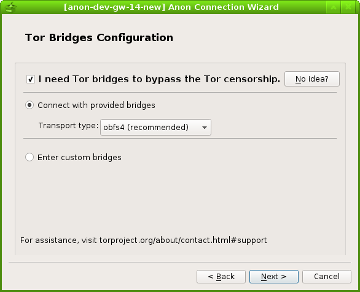
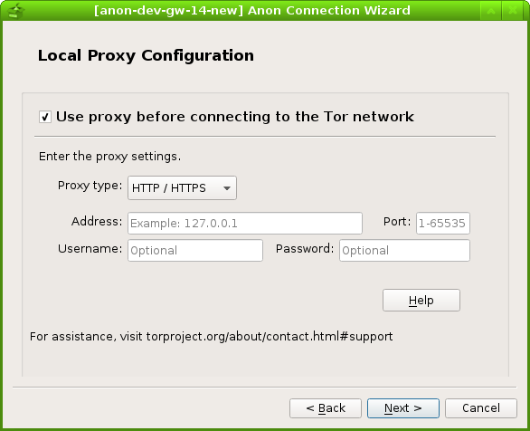
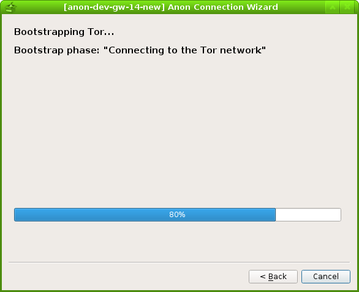

We believe security software like Whonix needs to remain Open Source and independent. Would you help sustain and grow the project? Learn more about our 14 year success story and maybe DONATE!
Anon Connection Wizard

Tor Connection Wizard - Graphical User Interface for Censorship Circumvention
Introduction
Basic
The Anon Connection Wizard application helps users in censored Internet environments connect to the Tor network via a Tor Bridge and/or a proxy.
Users are prompted with questions about their network environment, like whether they live in a censored area. This information is then used by the program to generate the most suitable Tor configuration possible. This file is placed:
- in Whonix-Gateway:
/usr/local/etc/torrc.d/40_tor_control_panel.conf, - other Linux distributions:
/etc/torrc.d/40_tor_control_panel.conf.
ScreenShots
The following screenshots provide a visual impression of Anon Connection Wizard.
Figure: Main torrc Configuration Page
Figure: Default Bridge Page

Figure: Custom Bridge Page

Figure: Local Proxy Configuration Page

Figure: Summary Configuration Page

Figure: Tor Network Bootstrapping Page

Anon Connection Wizard vs Tor Launcher
Anon Connection Wizard shares several similar functions with the current Tor-launcher, but the latter is considered to be "upstream" [1] of the former. As a consequence, Anon Connection Wizard developers are trying to maintain code compatibility with the latest version of Tor-launcher and collaborate closely in Tor Launcher's design and development process.
Despite this, both applications actually have very different use cases. The current implementation of Tor-launcher relies heavily on Tor Browser (which is based on Firefox), but not all Tor users are Tor Browser Bundle users. Many people still prefer to run core Tor with different torified applications ("system Tor users"), including all Whonix users. This group may prefer Anon Connection Wizard because it does not rely on Tor browser, and almost all dependencies have already been packaged in Debian.
Anon Connection Wizard vs Whonix Setup Wizard
For safety reasons, Whonix does not automatically connect to the public Tor network when it starts for the first time. Users are currently guided by Anon Connection Wizard on the first run, which has replaced Whonix Setup Wizard. The primary benefit of Anon Connection Wizard is that it allows the user to also configure a Tor Bridge or a proxy before connecting to Tor.
Run Anon Connection Wizard
To run it.
If you are using Qubes-Whonix™, complete the following steps.
Qubes App Launcher (blue/grey "Q") →
Whonix-Gateway™ ProxyVM (commonly named sys-whonix)
→ Anon Connection Wizard
If you are using a graphical Whonix-Gateway, complete the following steps.
Start Menu → Applications →
System → Anon Connection Wizard
If you are using a terminal emulator (such as for example qterminal) on Whonix-Gateway, type.
anon-connection-wizard
If you are using a CLI Whonix-Gateway, see footnote. [2]
Configure Tor Bridges
Anon Connection Wizard currently offers different types of bridges by default:
Choose option A or B.
A Anon Connection Wizard has some built-in bridges. To use them, complete the following steps.
Select "Configure" in the beginning page →
Select "I need Tor bridges to bypass the Tor censorship" →
Select "Connect with provided bridges" →
Select a transport type that is suitable.
 Tip: If it is unknown which transport type is the most
suitable or likely to work, then simply try them all until one is
functional. It is recommended to first start with
obfs4, and then
only try meek if
it does not work.
Tip: If it is unknown which transport type is the most
suitable or likely to work, then simply try them all until one is
functional. It is recommended to first start with
obfs4, and then
only try meek if
it does not work.
B If none of the default bridges work, the user can try to obtain a set of bridges manually. See Finding a Bridge and Choosing the Right Protocol. After obtaining a set of Tor bridges, complete the following step.
Select "Configure" in the beginning page →
Select "I need Tor bridges to bypass the Tor censorship" →
Select "Enter custom bridges" →
Copy and paste the set of bridges to that input box(one bridge per line)
Configure Proxy
Select "Use proxy before connecting to the Tor network" on the Proxy Configuration page
→ Choose the proxy type →
Fill out other necessary information
 Tips:
Tips:
1. Proxy Type
The proxy type is the protocol which is used to communicate with the proxy server. Since there are only three options, they can all be tried until one works.
2. Proxy IP/hostname
It is necessary to know the proxy IP for attempted connections. If
the user is trying to connect to a local proxy, then
127.0.0.1 should be specified since it is the
localhost.
3. Proxy Port number
It is necessary to know the port number for attempted connections. It
should be a positive integer from 1 to 65535.
If searching for the listening port number of a well-known censorship
circumvention tool, it can be found online.
4. Username and Password
If the username and password are unknown, they should be left blank to see if the connection will succeed. In most cases they are not needed.
See also: Connecting to Tor before a Proxy User →
Tor → Proxy → Internet.
Development
History
Anon Connection Wizard was originally developed by troubadour as part of the Whonix Project. Some screenshots of the old version can be found in this Whonix blog post. Anon Connection Wizard was further developed by iry under a Google Summer of Code project. The development process is ongoing and there are future plans to integrate Anon Connection Wizard into the Tor Controller GUI.
Forum Discussion
Most of the development discussions can be found in this forum post.
Footnotes
- Upstream refers to the originator of the component being discussed.
- Stop: sudo systemctl stop tor@default sudo systemctl disable tor@default Start: sudo systemctl enable tor@default sudo systemctl start tor@default
- As at May 2018, domain fronting has been pulled by both Google and Amazon, meaning the meek-google and meek-amazon pluggable transports will no longer work.
- https://gitlab.torproject.org/legacy/trac/-/issues/19715
- https://gitlab.torproject.org/legacy/trac/-/issues/26098
Categories: Documentation